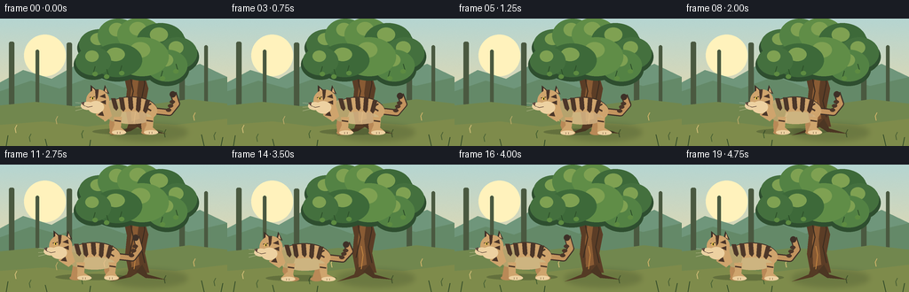
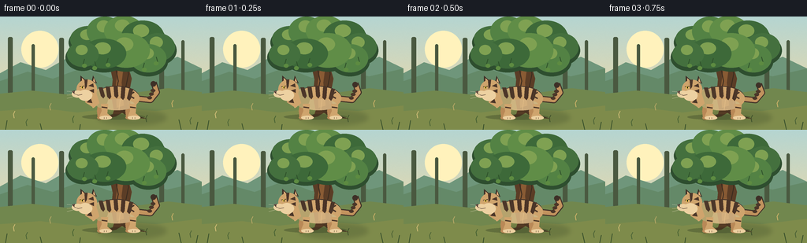

CODING AGENTS AS PIXEL WORLD MODELS
traex/GPT-5.6-Sol · instance_preservation_0055
点击播放 · 原生 RGB 像素
逐轮保存的候选
回放视频、检查图与代码变化。
每份候选均可单独播放。实际图片检查记录在下方工具轨迹中。
候选 01播放与检查图
点击播放 · 原生 RGB 像素


展开代码变化
--- 上一保存版本
+++ 本次保存版本
@@ -0,0 +1,194 @@
+from pathlib import Path
+import json, math
+import numpy as np
+from PIL import Image, ImageDraw, ImageFilter
+import artifact_io
+
+ROOT = Path(__file__).resolve().parent
+SPEC = json.loads((ROOT / "task_spec.json").read_text())
+W, H, N = SPEC["width"], SPEC["height"], SPEC["frames"]
+S = 4
+rng = np.random.default_rng(3407)
+
+def sc(v): return int(round(v*S))
+def box(b): return tuple(sc(v) for v in b)
+def smoothstep(t):
+ t=max(0,min(1,t)); return t*t*(3-2*t)
+def pts(seq, ox=0, oy=0): return [(sc(x+ox),sc(y+oy)) for x,y in seq]
+
+def ellipse(d, b, fill, outline=None, width=1):
+ d.ellipse(box(b), fill=fill, outline=outline, width=sc(width) if outline else 1)
+def polygon(d, p, fill): d.polygon(pts(p), fill=fill)
+def line(d, p, fill, width=1, joint="curve"): d.line(pts(p), fill=fill, width=sc(width), joint=joint)
+
+def background():
+ # painted dusk/sunlit woodland gradient
+ hh, ww = H*S, W*S
+ y=np.arange(hh)[:,None]/hh
+ top=np.array([181,213,209.],float); bot=np.array([241,218,166.],float)
+ arr=np.empty((hh,ww,3),dtype=np.float32)
+ mix=np.clip(y*1.15,0,1)[...,None]
+ arr[:]=top*(1-mix)+bot*mix
+ # gentle paper-like grain, deterministic
+ noise=rng.normal(0,1.25,(hh,ww,1))
+ arr=np.clip(arr+noise,0,255).astype(np.uint8)
+ im=Image.fromarray(arr,"RGB").convert("RGBA")
+ d=ImageDraw.Draw(im,"RGBA")
+ # distant sun haze
+ ellipse(d,(27,18,74,65),(255,242,188,120))
+ # rolling background layers
+ polygon(d,[(0,72),(26,58),(58,68),(88,51),(123,66),(158,49),(194,64),(225,51),(256,66),(256,104),(0,104)],(111,150,123,150))
+ polygon(d,[(0,82),(35,70),(67,79),(105,65),(140,78),(172,65),(212,76),(256,66),(256,110),(0,110)],(100,137,104,180))
+ # far trunks
+ for x,w,h in [(13,3,47),(42,2,38),(78,3,46),(205,3,48),(232,2,43)]:
+ d.rounded_rectangle(box((x-w,73-h,x+w,113)),radius=sc(2),fill=(74,89,64,75))
+ # ground
+ polygon(d,[(0,98),(40,94),(84,99),(125,94),(169,97),(213,91),(256,96),(256,144),(0,144)],(113,135,78,255))
+ # ground warm foreground gradient bands
+ polygon(d,[(0,120),(51,116),(98,122),(146,116),(198,120),(256,113),(256,144),(0,144)],(126,139,75,255))
+ # scattered soft grasses/stones fixed
+ for x,y,c in [(18,124,(211,191,120,180)),(34,134,(74,99,54,170)),(64,114,(184,168,102,160)),(93,130,(69,96,50,160)),(118,111,(220,194,121,150)),(186,129,(71,91,49,180)),(219,110,(209,180,105,170)),(242,132,(73,96,52,160))]:
+ line(d,[(x,y+5),(x-1,y),(x+1,y-4)],c,1)
+ return im
+
+BG=background()
+
+def draw_tree(im):
+ # tree is stable and always behind the tiger
+ d=ImageDraw.Draw(im,"RGBA")
+ # soft tree shadow on ground
+ shadow=Image.new("RGBA",im.size,(0,0,0,0)); sd=ImageDraw.Draw(shadow,"RGBA")
+ sd.ellipse(box((124,119,211,138)),fill=(34,49,27,52))
+ shadow=shadow.filter(ImageFilter.GaussianBlur(sc(3))); im.alpha_composite(shadow)
+ d=ImageDraw.Draw(im,"RGBA")
+ # broad old trunk silhouette
+ polygon(d,[(145,122),(141,101),(143,80),(139,62),(145,38),(154,31),(164,41),(162,62),(167,79),(163,100),(168,122)],(91,61,38,255))
+ # roots
+ polygon(d,[(147,112),(143,124),(124,132),(147,127),(157,121)],(84,58,36,255))
+ polygon(d,[(160,113),(166,124),(187,130),(164,128),(153,121)],(76,54,35,255))
+ # trunk highlights and furrows
+ polygon(d,[(148,116),(147,87),(151,58),(150,40),(156,35),(157,61),(154,84),(157,113)],(137,91,52,220))
+ line(d,[(145,105),(150,82),(147,67),(151,44)],(61,45,32,190),1.3)
+ line(d,[(163,111),(159,93),(163,73),(159,49)],(54,42,30,180),1.1)
+ line(d,[(151,118),(153,102),(151,92)],(194,133,66,120),1)
+ # branches
+ line(d,[(150,63),(130,45),(112,38)],(82,56,36,255),8)
+ line(d,[(158,67),(179,45),(196,35)],(80,55,34,255),7)
+ line(d,[(154,54),(155,28)],(91,60,36,255),7)
+ # canopy shadow first, then clustered foliage
+ clusters=[(112,29,23,17),(133,19,23,19),(157,18,25,19),(181,25,27,20),(200,39,22,18),(188,53,23,18),(160,43,30,22),(132,47,28,19),(105,48,20,16)]
+ for x,y,rx,ry in clusters:
+ ellipse(d,(x-rx-2,y-ry+3,x+rx+2,y+ry+5),(46,78,47,150))
+ for i,(x,y,rx,ry) in enumerate(clusters):
+ col=[(68,112,62,255),(83,130,68,255),(96,141,71,255),(61,105,57,255)][i%4]
+ ellipse(d,(x-rx,y-ry,x+rx,y+ry),col)
+ # individual light lobe
+ ellipse(d,(x-rx*.45,y-ry*.75,x+rx*.3,y+ry*.05),(127,161,82,120))
+ # small leaves hanging down make recognizable tree
+ for x,y,a in [(107,61,-1),(120,64,1),(183,66,-1),(198,58,1),(137,60,-1)]:
+ line(d,[(x,y-7),(x+a*2,y)],(47,82,43,220),1)
+ ellipse(d,(x-3,y-1,x+3,y+4),(93,139,65,240))
+
+def curve_line(d, points_, fill, width):
+ # Catmull-like polyline sampled from quadratic chain is enough at supersampling
+ line(d, points_, fill, width)
+
+def draw_tiger(base, cx, cy, phase, moving):
+ # All markings are anchored to the same local sprite, preserving identity.
+ layer=Image.new("RGBA",base.size,(0,0,0,0)); d=ImageDraw.Draw(layer,"RGBA")
+ bob=(math.sin(phase*2*math.pi)*0.9 if moving else math.sin(phase*2*math.pi)*0.25)
+ ox,oy=cx,cy+bob
+ dark=(62,48,39,255); stripe=(74,52,39,245); beige=(207,164,109,255)
+ light=(237,209,161,255); mid=(185,137,87,255); nose=(75,48,43,255)
+ # contact shadow under animal (dynamic, translucent)
+ ellipse(d,(ox-42,oy+22,ox+38,oy+29),(29,40,24,70))
+ # tail behind body, curved and clearly attached
+ tail_sway=math.sin(phase*2*math.pi)*4 if moving else math.sin(phase*2*math.pi)*1.5
+ tail=[(ox+27,oy+2),(ox+45,oy+4),(ox+53,oy-6+tail_sway*.3),(ox+49,oy-18+tail_sway)]
+ curve_line(d,tail,dark,8)
+ curve_line(d,tail,(194,147,94,255),5.5)
+ # tail bands
+ for k in (0.48,0.7,0.9):
+ # approximate marks along distal tail
+ tx=ox+44+(k-.5)*10; ty=oy+2-(k-.45)*22+tail_sway*(k-.35)
+ ellipse(d,(tx-3,ty-2,tx+3,ty+2),stripe)
+ ellipse(d,(ox+45,oy-20+tail_sway,ox+52,oy-13+tail_sway),dark)
+ # legs, with mild alternating walking cycle
+ stride=(math.sin(phase*2*math.pi)*5 if moving else 0)
+ # far legs subdued
+ for lx,dx in [(ox+19,-stride),(ox-17,stride)]:
+ polygon(d,[(lx-5,oy+10),(lx+3,oy+10),(lx+3+dx*.20,oy+23),(lx+7+dx,oy+25),(lx+7+dx,oy+28),(lx-5+dx,oy+28),(lx-6,oy+18)],mid)
+ ellipse(d,(lx-6+dx,oy+24,lx+8+dx,oy+29),mid)
+ # torso with dorsal darker contour
+ ellipse(d,(ox-27,oy-14,ox+31,oy+17),dark)
+ ellipse(d,(ox-28,oy-13,ox+31,oy+17),beige)
+ # belly highlight / shoulder depth
+ ellipse(d,(ox-20,oy+3,ox+25,oy+17),(225,190,139,210))
+ ellipse(d,(ox-27,oy-11,ox-9,oy+14),(216,177,124,170))
+ # fixed body stripes: same count, spacing, silhouette throughout
+ body_stripes=[(-18,-12,-15,-1),(-9,-13,-7,0),(1,-14,2,-1),(11,-13,10,1),(21,-10,18,2)]
+ for x1,y1,x2,y2 in body_stripes:
+ polygon(d,[(ox+x1-3,oy+y1),(ox+x1+2,oy+y1),(ox+x2+2,oy+y2),(ox+x2,oy+y2+3),(ox+x2-3,oy+y2)],stripe)
+ # flank chevrons / hallmark mark
+ line(d,[(ox+24,oy-6),(ox+17,oy-2),(ox+24,oy+2)],stripe,2)
+ # near legs on top
+ for lx,dx in [(ox+23,stride),(ox-13,-stride)]:
+ knee=dx*.22
+ polygon(d,[(lx-5,oy+9),(lx+4,oy+9),(lx+3+knee,oy+21),(lx+8+dx,oy+25),(lx+7+dx,oy+28),(lx-6+dx,oy+28),(lx-7+dx,oy+25),(lx-4,oy+18)],beige)
+ ellipse(d,(lx-7+dx,oy+24,lx+9+dx,oy+29),light)
+ line(d,[(lx-4,oy+13),(lx+3,oy+14)],stripe,1.8)
+ # neck ruff links torso and head
+ polygon(d,[(ox-25,oy-8),(ox-36,oy-15),(ox-38,oy+7),(ox-27,oy+14),(ox-20,oy+8)],beige)
+ polygon(d,[(ox-31,oy-11),(ox-36,oy-4),(ox-31,oy-1)],stripe)
+ polygon(d,[(ox-31,oy+2),(ox-36,oy+7),(ox-29,oy+8)],stripe)
+ # head in left-facing profile
+ hx,hy=ox-37,oy-9
+ # ears
+ polygon(d,[(hx-7,hy-8),(hx-7,hy-18),(hx+1,hy-11)],dark)
+ polygon(d,[(hx-5,hy-10),(hx-5,hy-15),(hx-1,hy-11)],(224,177,125,255))
+ polygon(d,[(hx+7,hy-10),(hx+9,hy-18),(hx+14,hy-8)],dark)
+ polygon(d,[(hx+9,hy-11),(hx+10,hy-15),(hx+12,hy-9)],(224,177,125,255))
+ ellipse(d,(hx-12,hy-13,hx+14,hy+12),beige)
+ # cheek and white muzzle are strongly readable at resolution
+ ellipse(d,(hx-10,hy+0,hx+8,hy+14),light)
+ ellipse(d,(hx-18,hy+1,hx-3,hy+10),light)
+ # forehead stripe and temple stripes
+ polygon(d,[(hx-2,hy-13),(hx+2,hy-13),(hx+1,hy-4),(hx-1,hy-1)],stripe)
+ polygon(d,[(hx+9,hy-8),(hx+3,hy-5),(hx+10,hy-3)],stripe)
+ polygon(d,[(hx+10,hy-1),(hx+4,hy+1),(hx+10,hy+4)],stripe)
+ # eye, brow, nose, mouth
+ line(d,[(hx-8,hy-4),(hx-2,hy-5)],dark,1)
+ ellipse(d,(hx-6.5,hy-4.8,hx-3.5,hy-1.5),(246,207,78,255))
+ ellipse(d,(hx-5.2,hy-4.4,hx-4.2,hy-1.7),(20,20,16,255))
+ polygon(d,[(hx-18,hy+2),(hx-14,hy+1),(hx-15,hy+5)],nose)
+ line(d,[(hx-15,hy+5),(hx-10,hy+7),(hx-5,hy+6)],(70,47,41,255),.8)
+ # whiskers
+ for dy,yy in [(-1,hy+3),(1,hy+6),(3,hy+8)]:
+ line(d,[(hx-12,yy),(hx-24,yy+dy)],(243,230,200,210),.6)
+ # toes
+ for lx,dx in [(ox+23,stride),(ox-13,-stride)]:
+ for q in (0,3): line(d,[(lx+dx+q-1,oy+26),(lx+dx+q-1,oy+28)],(112,77,57,180),.55)
+ # subtle overall softness then exact composite
+ base.alpha_composite(layer)
+
+def make_frame(i):
+ im=BG.copy()
+ draw_tree(im)
+ # Pause in front of tree first, then a deliberate leftward walk, then settle.
+ if i <= 3: t=0.0
+ elif i >= 17: t=1.0
+ else: t=smoothstep((i-3)/14)
+ cx=146-69*t
+ moving=3 < i < 18
+ phase=((i-3)/5.0) if moving else (i/12.0)
+ draw_tiger(im,cx,102,phase,moving)
+ # cinematic foreground blades, restrained so subject stays clear
+ d=ImageDraw.Draw(im,"RGBA")
+ for x,h,lean in [(7,12,2),(53,8,-2),(101,7,1),(230,13,-3),(249,10,2)]:
+ line(d,[(x,144),(x+lean,144-h)],(53,77,42,145),1)
+ return np.asarray(im.convert("RGB").resize((W,H),Image.Resampling.LANCZOS),dtype=np.uint8)
+
+frames=np.stack([make_frame(i) for i in range(N)],axis=0)
+assert frames.shape==(N,H,W,3) and frames.dtype==np.uint8
+artifact_io.save(frames,ROOT)
+print(f"saved {N} RGB frames at {W}x{H}")
可观测工具轨迹
实际执行的命令与返回图片。
命令 1exit 0
/bin/bash -lc "cat prompt.txt && printf '\\n---RULES---\\n' && cat GENERATION_RULES.md && printf '\\n---SPEC---\\n' && cat task_spec.json"
命令 2exit 0
/bin/bash -lc "find . -maxdepth 2 -type f -printf '%p\\n' | sort && printf '\\n--- binaries ---\\n' && command -v ffmpeg || true && command -v blender || true && command -v python3 || true"
命令 3exit 0
/bin/bash -lc "sed -n '1,240p' artifact_io.py"
命令 4exit 0
/bin/bash -lc "cat > generate.py <<'PY'
from pathlib import Path
import json, math
import numpy as np
from PIL import Image, ImageDraw, ImageFilter
import artifact_io
ROOT = Path(__file__).resolve().parent
SPEC = json.loads((ROOT / \"task_spec.json\").read_text())
W, H, N = SPEC[\"width\"], SPEC[\"height\"], SPEC[\"frames\"]
S = 4
rng = np.random.default_rng(3407)
def sc(v): return int(round(v*S))
def box(b): return tuple(sc(v) for v in b)
def smoothstep(t):
t=max(0,min(1,t)); return t*t*(3-2*t)
def pts(seq, ox=0, oy=0): return [(sc(x+ox),sc(y+oy)) for x,y in seq]
def ellipse(d, b, fill, outline=None, width=1):
d.ellipse(box(b), fill=fill, outline=outline, width=sc(width) if outline else 1)
def polygon(d, p, fill): d.polygon(pts(p), fill=fill)
def line(d, p, fill, width=1, joint=\"curve\"): d.line(pts(p), fill=fill, width=sc(width), joint=joint)
def background():
# painted dusk/sunlit woodland gradient
hh, ww = H*S, W*S
y=np.arange(hh)[:,None]/hh
top=np.array([181,213,209.],float); bot=np.array([241,218,166.],float)
arr=np.empty((hh,ww,3),dtype=np.float32)
mix=np.clip(y*1.15,0,1)[...,None]
arr[:]=top*(1-mix)+bot*mix
# gentle paper-like grain, deterministic
noise=rng.normal(0,1.25,(hh,ww,1))
arr=np.clip(arr+noise,0,255).astype(np.uint8)
im=Image.fromarray(arr,\"RGB\").convert(\"RGBA\")
d=ImageDraw.Draw(im,\"RGBA\")
# distant sun haze
ellipse(d,(27,18,74,65),(255,242,188,120))
# rolling background layers
polygon(d,[(0,72),(26,58),(58,68),(88,51),(123,66),(158,49),(194,64),(225,51),(256,66),(256,104),(0,104)],(111,150,123,150))
polygon(d,[(0,82),(35,70),(67,79),(105,65),(140,78),(172,65),(212,76),(256,66),(256,110),(0,110)],(100,137,104,180))
# far trunks
for x,w,h in [(13,3,47),(42,2,38),(78,3,46),(205,3,48),(232,2,43)]:
d.rounded_rectangle(box((x-w,73-h,x+w,113)),radius=sc(2),fill=(74,89,64,75))
# ground
polygon(d,[(0,98),(40,94),(84,99),(125,94),(169,97),(213,91),(256,96),(256,144),(0,144)],(113,135,78,255))
# ground warm foreground gradient bands
polygon(d,[(0,120),(51,116),(98,122),(146,116),(198,120),(256,113),(256,144),(0,144)],(126,139,75,255))
# scattered soft grasses/stones fixed
for x,y,c in [(18,124,(211,191,120,180)),(34,134,(74,99,54,170)),(64,114,(184,168,102,160)),(93,130,(69,96,50,160)),(118,111,(220,194,121,150)),(186,129,(71,91,49,180)),(219,110,(209,180,105,170)),(242,132,(73,96,52,160))]:
line(d,[(x,y+5),(x-1,y),(x+1,y-4)],c,1)
return im
BG=background()
def draw_tree(im):
# tree is stable and always behind the tiger
d=ImageDraw.Draw(im,\"RGBA\")
# soft tree shadow on ground
shadow=Image.new(\"RGBA\",im.size,(0,0,0,0)); sd=ImageDraw.Draw(shadow,\"RGBA\")
sd.ellipse(box((124,119,211,138)),fill=(34,49,27,52))
shadow=shadow.filter(ImageFilter.GaussianBlur(sc(3))); im.alpha_composite(shadow)
d=ImageDraw.Draw(im,\"RGBA\")
# broad old trunk silhouette
polygon(d,[(145,122),(141,101),(143,80),(139,62),(145,38),(154,31),(164,41),(162,62),(167,79),(163,100),(168,122)],(91,61,38,255))
# roots
polygon(d,[(147,112),(143,124),(124,132),(147,127),(157,121)],(84,58,36,255))
polygon(d,[(160,113),(166,124),(187,130),(164,128),(153,121)],(76,54,35,255))
# trunk highlights and furrows
polygon(d,[(148,116),(147,87),(151,58),(150,40),(156,35),(157,61),(154,84),(157,113)],(137,91,52,220))
line(d,[(145,105),(150,82),(147,67),(151,44)],(61,45,32,190),1.3)
line(d,[(163,111),(159,93),(163,73),(159,49)],(54,42,30,180),1.1)
line(d,[(151,118),(153,102),(151,92)],(194,133,66,120),1)
# branches
line(d,[(150,63),(130,45),(112,38)],(82,56,36,255),8)
line(d,[(158,67),(179,45),(196,35)],(80,55,34,255),7)
line(d,[(154,54),(155,28)],(91,60,36,255),7)
# canopy shadow first, then clustered foliage
clusters=[(112,29,23,17),(133,19,23,19),(157,18,25,19),(181,25,27,20),(200,39,22,18),(188,53,23,18),(160,43,30,22),(132,47,28,19),(105,48,20,16)]
for x,y,rx,ry in clusters:
ellipse(d,(x-rx-2,y-ry+3,x+rx+2,y+ry+5),(46,78,47,150))
for i,(x,y,rx,ry) in enumerate(clusters):
col=[(68,112,62,255),(83,130,68,255),(96,141,71,255),(61,105,57,255)][i%4]
ellipse(d,(x-rx,y-ry,x+rx,y+ry),col)
# individual light lobe
ellipse(d,(x-rx*.45,y-ry*.75,x+rx*.3,y+ry*.05),(127,161,82,120))
# small leaves hanging down make recognizable tree
for x,y,a in [(107,61,-1),(120,64,1),(183,66,-1),(198,58,1),(137,60,-1)]:
line(d,[(x,y-7),(x+a*2,y)],(47,82,43,220),1)
ellipse(d,(x-3,y-1,x+3,y+4),(93,139,65,240))
def curve_line(d, points_, fill, width):
# Catmull-like polyline sampled from quadratic chain is enough at supersampling
line(d, points_, fill, width)
def draw_tiger(base, cx, cy, phase, moving):
# All markings are anchored to the same local sprite, preserving identity.
layer=Image.new(\"RGBA\",base.size,(0,0,0,0)); d=ImageDraw.Draw(layer,\"RGBA\")
bob=(math.sin(phase*2*math.pi)*0.9 if moving else math.sin(phase*2*math.pi)*0.25)
ox,oy=cx,cy+bob
dark=(62,48,39,255); stripe=(74,52,39,245); beige=(207,164,109,255)
light=(237,209,161,255); mid=(185,137,87,255); nose=(75,48,43,255)
# contact shadow under animal (dynamic, translucent)
ellipse(d,(ox-42,oy+22,ox+38,oy+29),(29,40,24,70))
# tail behind body, curved and clearly attached
tail_sway=math.sin(phase*2*math.pi)*4 if moving else math.sin(phase*2*math.pi)*1.5
tail=[(ox+27,oy+2),(ox+45,oy+4),(ox+53,oy-6+tail_sway*.3),(ox+49,oy-18+tail_sway)]
curve_line(d,tail,dark,8)
curve_line(d,tail,(194,147,94,255),5.5)
# tail bands
for k in (0.48,0.7,0.9):
# approximate marks along distal tail
tx=ox+44+(k-.5)*10; ty=oy+2-(k-.45)*22+tail_sway*(k-.35)
ellipse(d,(tx-3,ty-2,tx+3,ty+2),stripe)
ellipse(d,(ox+45,oy-20+tail_sway,ox+52,oy-13+tail_sway),dark)
# legs, with mild alternating walking cycle
stride=(math.sin(phase*2*math.pi)*5 if moving else 0)
# far legs subdued
for lx,dx in [(ox+19,-stride),(ox-17,stride)]:
polygon(d,[(lx-5,oy+10),(lx+3,oy+10),(lx+3+dx*.20,oy+23),(lx+7+dx,oy+25),(lx+7+dx,oy+28),(lx-5+dx,oy+28),(lx-6,oy+18)],mid)
ellipse(d,(lx-6+dx,oy+24,lx+8+dx,oy+29),mid)
# torso with dorsal darker contour
ellipse(d,(ox-27,oy-14,ox+31,oy+17),dark)
ellipse(d,(ox-28,oy-13,ox+31,oy+17),beige)
# belly highlight / shoulder depth
ellipse(d,(ox-20,oy+3,ox+25,oy+17),(225,190,139,210))
ellipse(d,(ox-27,oy-11,ox-9,oy+14),(216,177,124,170))
# fixed body stripes: same count, spacing, silhouette throughout
body_stripes=[(-18,-12,-15,-1),(-9,-13,-7,0),(1,-14,2,-1),(11,-13,10,1),(21,-10,18,2)]
for x1,y1,x2,y2 in body_stripes:
polygon(d,[(ox+x1-3,oy+y1),(ox+x1+2,oy+y1),(ox+x2+2,oy+y2),(ox+x2,oy+y2+3),(ox+x2-3,oy+y2)],stripe)
# flank chevrons / hallmark mark
line(d,[(ox+24,oy-6),(ox+17,oy-2),(ox+24,oy+2)],stripe,2)
# near legs on top
for lx,dx in [(ox+23,stride),(ox-13,-stride)]:
knee=dx*.22
polygon(d,[(lx-5,oy+9),(lx+4,oy+9),(lx+3+knee,oy+21),(lx+8+dx,oy+25),(lx+7+dx,oy+28),(lx-6+dx,oy+28),(lx-7+dx,oy+25),(lx-4,oy+18)],beige)
ellipse(d,(lx-7+dx,oy+24,lx+9+dx,oy+29),light)
line(d,[(lx-4,oy+13),(lx+3,oy+14)],stripe,1.8)
# neck ruff links torso and head
polygon(d,[(ox-25,oy-8),(ox-36,oy-15),(ox-38,oy+7),(ox-27,oy+14),(ox-20,oy+8)],beige)
polygon(d,[(ox-31,oy-11),(ox-36,oy-4),(ox-31,oy-1)],stripe)
polygon(d,[(ox-31,oy+2),(ox-36,oy+7),(ox-29,oy+8)],stripe)
# head in left-facing profile
hx,hy=ox-37,oy-9
# ears
polygon(d,[(hx-7,hy-8),(hx-7,hy-18),(hx+1,hy-11)],dark)
polygon(d,[(hx-5,hy-10),(hx-5,hy-15),(hx-1,hy-11)],(224,177,125,255))
polygon(d,[(hx+7,hy-10),(hx+9,hy-18),(hx+14,hy-8)],dark)
polygon(d,[(hx+9,hy-11),(hx+10,hy-15),(hx+12,hy-9)],(224,177,125,255))
ellipse(d,(hx-12,hy-13,hx+14,hy+12),beige)
# cheek and white muzzle are strongly readable at resolution
ellipse(d,(hx-10,hy+0,hx+8,hy+14),light)
ellipse(d,(hx-18,hy+1,hx-3,hy+10),light)
# forehead stripe and temple stripes
polygon(d,[(hx-2,hy-13),(hx+2,hy-13),(hx+1,hy-4),(hx-1,hy-1)],stripe)
polygon(d,[(hx+9,hy-8),(hx+3,hy-5),(hx+10,hy-3)],stripe)
polygon(d,[(hx+10,hy-1),(hx+4,hy+1),(hx+10,hy+4)],stripe)
# eye, brow, nose, mouth
line(d,[(hx-8,hy-4),(hx-2,hy-5)],dark,1)
ellipse(d,(hx-6.5,hy-4.8,hx-3.5,hy-1.5),(246,207,78,255))
ellipse(d,(hx-5.2,hy-4.4,hx-4.2,hy-1.7),(20,20,16,255))
polygon(d,[(hx-18,hy+2),(hx-14,hy+1),(hx-15,hy+5)],nose)
line(d,[(hx-15,hy+5),(hx-10,hy+7),(hx-5,hy+6)],(70,47,41,255),.8)
# whiskers
for dy,yy in [(-1,hy+3),(1,hy+6),(3,hy+8)]:
line(d,[(hx-12,yy),(hx-24,yy+dy)],(243,230,200,210),.6)
# toes
for lx,dx in [(ox+23,stride),(ox-13,-stride)]:
for q in (0,3): line(d,[(lx+dx+q-1,oy+26),(lx+dx+q-1,oy+28)],(112,77,57,180),.55)
# subtle overall softness then exact composite
base.alpha_composite(layer)
def make_frame(i):
im=BG.copy()
draw_tree(im)
# Pause in front of tree first, then a deliberate leftward walk, then settle.
if i <= 3: t=0.0
elif i >= 17: t=1.0
else: t=smoothstep((i-3)/14)
cx=146-69*t
moving=3 < i < 18
phase=((i-3)/5.0) if moving else (i/12.0)
draw_tiger(im,cx,102,phase,moving)
# cinematic foreground blades, restrained so subject stays clear
d=ImageDraw.Draw(im,\"RGBA\")
for x,h,lean in [(7,12,2),(53,8,-2),(101,7,1),(230,13,-3),(249,10,2)]:
line(d,[(x,144),(x+lean,144-h)],(53,77,42,145),1)
return np.asarray(im.convert(\"RGB\").resize((W,H),Image.Resampling.LANCZOS),dtype=np.uint8)
frames=np.stack([make_frame(i) for i in range(N)],axis=0)
assert frames.shape==(N,H,W,3) and frames.dtype==np.uint8
artifact_io.save(frames,ROOT)
print(f\"saved {N} RGB frames at {W}x{H}\")
PY
python3 generate.py
ls -lh pixels.npz inspection.png index.html frames/00.png frames/19.png"命令 5exit 0
/bin/bash -lc "python3 - <<'PY'
from pathlib import Path
import numpy as np
from PIL import Image
z=np.load('pixels.npz')['pixels']
assert z.shape==(144,256,20) and z.dtype==np.uint32
files=sorted(Path('frames').glob('*.png'))
assert len(files)==20
for f in files:
a=np.asarray(Image.open(f))
assert a.shape==(144,256,3) and a.dtype==np.uint8
# report per-frame changed-pixel fraction to catch frozen/broken output
x=np.stack([np.asarray(Image.open(f)) for f in files])
chg=np.mean(np.any(x[1:] "'!= x[:-1],axis=3),axis=(1,2))
print('"'validated:',z.shape,z.dtype,'frames=',len(files))
print('adjacent changed-pixel fraction:',np.round(chg,3).tolist())
print('artifacts:',*[p for p in ['pixels.npz','index.html','inspection.png','transition_check.png'] if Path(p).is_file()])
PY"保存候选 1 份；完成命令 5 次；可验证图片返回 0 张。原始 API 响应与完整日志保留在本地。